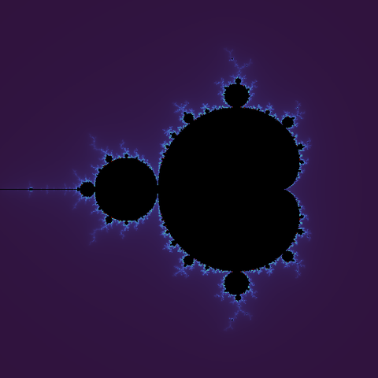
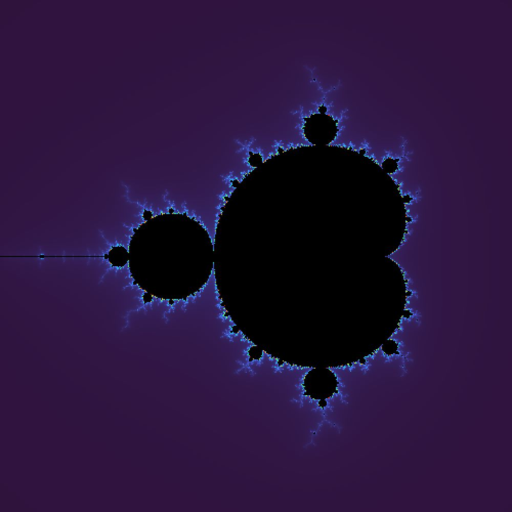

- Smooth colour instead of banding. Colouring by iteration count gives hard rings. A large escape radius of 256 plus the fractional escape time
i + 1 - log2(log2(|z|))is continuous across the band boundary, and interpolates through a fifteen stop palette. - Zoom anchored to the cursor. The wheel handler converts the cursor to a complex coordinate, applies the zoom, then moves the centre so that coordinate lands back under the cursor. Four lines, and the difference between exploring the set and chasing it.
- Computed at 500 by 500 with 500 iterations and stretched to a 1000 pixel window, so it stays interactive on one CPU thread.
- Limits, stated: fixed iteration count, double precision gives out near a view width of 1e-14, and the row loop is embarrassingly parallel but still single threaded.
